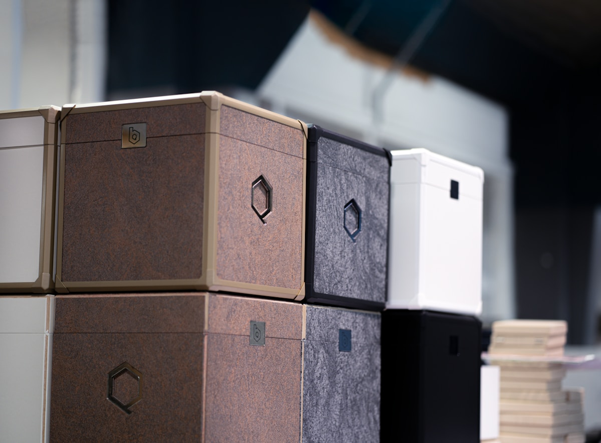

Short answer: store personalized gifts in a cool, dry place away from direct sunlight, wrapped in acid-free tissue paper inside breathable containers. Sunlight fades prints, humidity warps frames and blankets, and sealed plastic traps moisture. Label every box, add silica gel packs for textiles, and check items twice a year. The conclusion is simple: careful storage keeps keepsakes gift-ready for decades.

The Four Enemies of Keepsakes
Every storage failure I have been called to assess comes down to one of four things. Sunlight bleaches prints through windows even in storage rooms. Humidity swells frames, musts blankets, and rusts tin lids. Heat accelerates all chemical aging, including ink. And sealed plastic bins, the most common mistake, hold condensation against fabrics and create mildew. Notice that none of these are dramatic events; they are slow, quiet, and entirely preventable.
Storage by Gift Type
- Photo blankets: wash first, dry fully, fold loosely with acid-free tissue between folds, store in a cotton bag or breathable bin
- Photo pillows: remove inserts, store cover and insert separately in breathable bags
- Custom mugs: clean and bone dry, wrapped individually in tissue or bubble wrap, upright in a padded box
- Framed prints: face-wrapped in paper, stored upright (never flat) in a climate-stable closet
- T-shirts and apparel: folded with tissue, in a breathable container, away from any wooden shelf that leaches acid
Storage Options Compared
| Method | Protection Level | Best For |
|---|---|---|
| Cotton storage bag | Breathable dust protection | Blankets and apparel in climate-stable closets |
| Plastic bin with lid ajar | Dust plus some airflow | Mugs and hard goods in dry rooms |
| Sealed airtight plastic bin | High protection, high mildew risk | Only with silica packs and dry climates |
| Acid-free archive box | Museum grade for paper and photos | Framed prints, photo books, delicate keepsakes |
| Vacuum compression bag | Space saving, fiber crushing | Not recommended for printed textiles |
Preparing Textiles for Storage
The most important step happens before anything goes in a box: the item must be clean and completely dry. Stains you cannot see set permanently over months, and residual moisture becomes mildew inside any container. Wash printed textiles following the routine in our printed blanket washing guide, air dry fully for a full day, and fold loosely rather than tightly so the print never sits creased for months.
A Twice-Yearly Checkup Routine
Put a recurring reminder on your calendar for spring and fall. Open every box, air the textiles for an hour, check for any musty smell or discoloration, rotate folds so creases do not set permanently, and replace silica gel packs if they feel saturated. Five minutes per box, twice a year, catches ninety-five percent of problems while they are still free to fix.
What Never to Do
- Never store keepsakes in attics or garages, where temperature swings are extreme
- Never wrap prints directly in newspaper; the ink transfers
- Never store textiles in sealed plastic without drying them first
- Never stack heavy items on top of framed prints or boxed mugs
- Never store anything printed in direct sunlight, even indoors
Frequently Asked Questions
Can I store custom blankets in plastic bins?
Yes, if the blanket is clean, fully dry, and the bin is not airtight, or contains silica gel packs. Sealed bins with any residual moisture are the leading cause of mildew damage.
How do I protect photo prints from fading in storage?
Keep them out of all light, especially sunlight, in acid-free boxes or wrapped in acid-free tissue. Light exposure is the fastest cause of fading, even in a storage room.
Should keepsakes be stored in attics or garages?
No. Attics and garages experience extreme temperature and humidity swings that warp, crack, and mildew keepsakes. Choose an interior closet with stable conditions instead.
How often should I check stored personalized gifts?
Twice a year is enough. Air out textiles, check for odors or discoloration, refold along new lines, and replace saturated silica packs. Early detection prevents permanent damage.